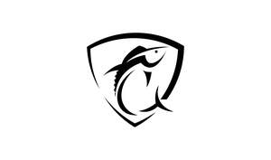

Trade Mark Journal No.2025/031 1 August 2025
UK00004238402 23 July 2025 (8,24,25,28)

- Class 8
- Fishing pliers; Fishing knives; Fishing line cutters.
- Class 24
- Towel sheet; Towels; Quilts of towel; Bath wrap towels; Kitchen towels of cloth; Bath towels; Bathroom towels; Dish towels; Kitchen towels; Glass cloths [towels]; Bath sheets (towels); Terry towels; Dish towels for drying; Hand towels; Hooded towels; Face towels; Beach towels; Tea towels; Yoga towels; Face cloths of towelling; Textile face towels; Face towels of textile; Hand towels of textile; Towels [textile] for the beach; Towels [textile]; Towels [of textile]; Face towels of textiles; Golf towels; Towels of textiles; Glass-cloth [towels]; Bath linen; Textile exercise towels; Bed linen of paper; Household linen, including face towels; Tea cloths; Washing mitts for toilet use; Bath gloves; Bath mitts; Linen cloth; Children's towels; Bunting flags; Cloth flags; Plastic flags; Brocade flags; Fabric flags; Nylon flags; Flags and pennants of textile; Flags of textile; Pennants [flags], other than of paper; Flags, not of paper; Flags of textile or plastic; Banners; Textile flags used for place settings; Cloth banners; Plastic banners; Banners of textile; Banners textile; Banners of textile or plastic; Bunting; Plastic pennants; Cloth pennants; Plastic bunting; Cloth bunting; Pennants of textile; Towels of textile featuring American football team logos.
- Class 25
- Clothing; Knitwear [clothing]; Jackets [clothing]; Ready-to-wear clothing; Woolen clothing; Furs [clothing]; Garments for protecting clothing; Layettes [clothing]; Clothing layettes; Linen clothing; Headbands [clothing]; Headbands for clothing; Gloves [clothing]; Gloves as clothing; Clothes; Aprons [clothing]; Maternity clothing; Kerchiefs [clothing]; Jerseys [clothing]; Denims [clothing]; Shorts [clothing]; Cashmere clothing; Capes (clothing); Oilskins [clothing]; Gabardines [clothing]; Silk clothing; Leather clothing; Clothing of leather; Leather (Clothing of -); Collars [clothing]; Parts of clothing, footwear and headgear; Knitted clothing; Veils [clothing]; Windproof clothing; Hoods [clothing]; Corsets [clothing, foundation garments]; Embroidered clothing; Wristbands [clothing]; Bandeaux [clothing]; Belts [clothing]; Belts for clothing; Rainproof clothing; Waterproof clothing; Casual clothing; Visors [clothing]; Jackets being sports clothing; Jackets (Stuff -) [clothing]; Stuff jackets [clothing]; Bottoms [clothing]; Playsuits [clothing]; Ready-made clothing; Clothing for leisure wear; Latex clothing; Infant clothing; Woven clothing; Trunks being clothing; Leisure clothing; Clothing for sports; Sports clothing; Drawers [clothing]; Drawers as clothing; Ties [clothing]; Athletic clothing; Clothing for children; Muffs [clothing]; Bodies [clothing]; Clothing for babies; Tops [clothing]; Clothing for infants; Clothing for cycling; Weatherproof clothing; Fabric belts [clothing]; Pockets for clothing; Water-resistant clothing; Triathlon clothing; Handwarmers [clothing]; Clothing for skiing; Beach clothing; Thermal clothing; Chaps (clothing); Cowls [clothing]; Men's clothing; Fishing clothing; Mitts [clothing]; Dance clothing; Braces for clothing; Fishing waders; Fishing jackets; Fishing footwear; Fishing vests; Vests (Fishing -); Fishing smocks; Fishing shirts; Fishing boots; Fishing headwear; Waterproof boots for fishing; Rubber fishing boots; Clothing for fishermen; Neck tubes; Neck tube scarves; Neck warmers; Tube tops; Neck gaiters; Neck scarves; Neck scarfs [mufflers]; Neck scarves [mufflers]; Mufflers [neck scarves]; Mufflers as neck scarves; Polo neck jumpers; Crew neck sweaters; Bandanas [neckerchiefs]; Bandannas; Bandanas; American football shirts; Caps; Caps with visors; Caps [headwear]; Caps being headwear; Skull caps; Baseball caps; Swimming caps [bathing caps]; Peaked caps; Knitted caps; Baseball caps and hats; Cycling caps; Waterpolo caps; Sports caps and hats; Bucket caps; Sports caps; Bathing caps; Shower caps; Caps (Shower -); Swim caps; Flat caps; Swimming caps; Garrison caps; Golf caps; Knot caps; Cap visors; Cap peaks; Peaks (Cap -); Mitres [hats]; Beanies; Beanie hats; Hats; Bonnets [headwear]; Miters [hats]; Bobble hats; Baseball hats; Visors [headwear]; Visors being headwear; Top hats.
- Class 28
- Lures for hunting or fishing; Lures for fishing; Fishing lures; Fishing creels; Fishing sinkers; Rods for fishing; Fishing rods; Fishing reels; Reels for fishing; Fishing tippets; Fishing tackle; Tackle (Fishing -); Hunting and fishing equipment; Poles for fishing; Fishing poles; Hooks for fishing; Fishing hooks; Fishing gaffs; Fishing equipment; Decoys for hunting or fishing; Fishing spinners; Spears for use in fishing; Floats for fishing; Fishing floats; Fishing swivels; Fishing plugs; Bags for fishing; Fishing weights; Creels [fishing traps]; Scent lures for hunting or fishing; Lures (Scent -) for hunting or fishing; Landing nets for fishing; Fishing ground baits; Lines for fishing; Fishing lines; Bait (Artificial fishing -); Artificial fishing bait; Handheld fishing nets; Gut for fishing; Fish hook removers being fishing tackle; Fishing bait [synthetic]; Artificial baits for fishing; Lures [artificial] for fishing; Fishing harnesses; Fishing plumbs; Fishing leaders; Rod blanks (Fishing -); Fishing tackle floats; Fishing rod cases; Artificial chum for fishing; Swivels [fishing tackle]; Fishing fly boxes; Fishing rod supports; Fishing rod holders; Fishing rod rests; Fishing lure boxes; Fishing tackle bags; Fishing reel cases; Fishing rod handles; Fishing rod shaped game controllers for fishing games; Paternosters [fishing tackle]; Fishing tackle boxes; Fishing tackle terminal; Fishing line casts; Tungsten weights for fishing; Hunting lures; Lures for hunting; Artificial fishing worms; Fish lures; Bags adapted for fishing; Bite indicators [fishing tackle]; Ice fishing strike indicator; Bite sensors [fishing tackle]; Angling nets; Landing nets for anglers; Nets (Landing -) for anglers; Landing nets [for anglers]; Fishing tackle terminal tackle; Aquarium fish nets; Inflatable fishing float tubes; Spearfishing guns for scuba diving; Nets for use by anglers; Artificial fish bait; Fish hooks; Hooks (Fish -); Spearfishing harpoon guns [scuba equipment].
Adam Ashley Evans